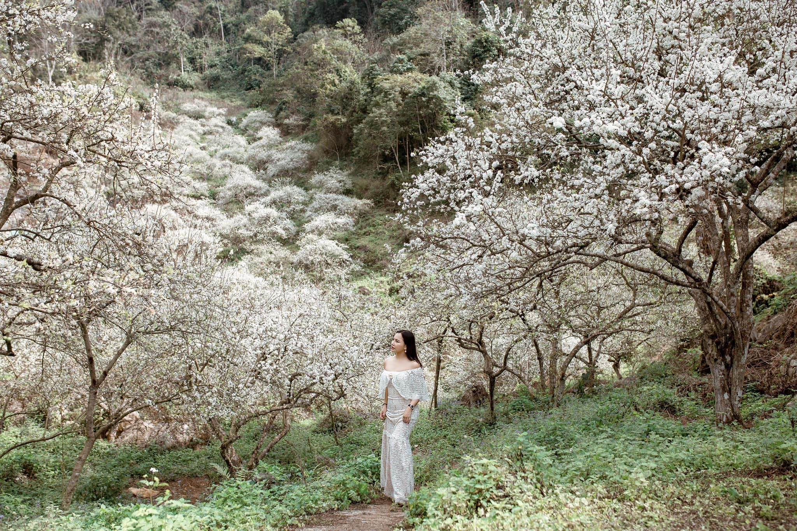
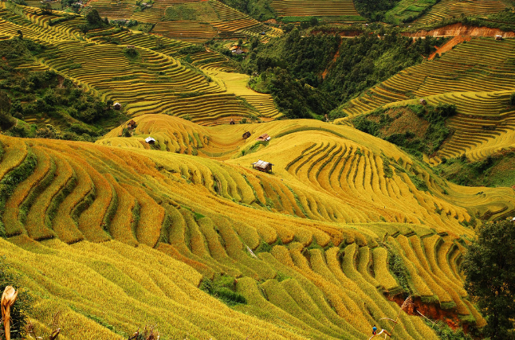
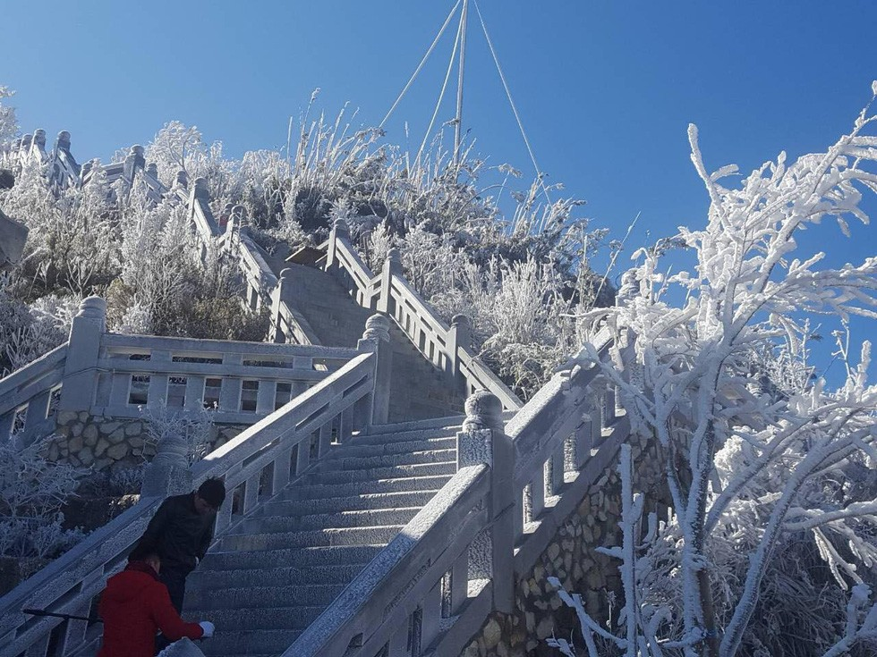

- TRANG CHỦ
- THỜI ĐIỂM NÊN ĐI
- PHƯƠNG TIỆN ĐI LẠI
- CHI PHÍ
>
Thời điểm thích hợp để đi du lịch Tây Bắc
Tây Bắc là vùng được thiên nhiên ưu ái, vì thế mỗi mùa ở đây đều mang những vẻ đẹp khác nhau, khi thì rực rỡ, khi thì bình yên nhẹ nhàng.
1.Mùa xuân
Mùa xuân ở Tây Bắc không quá dài, chỉ khoảng hai tháng đầu năm với nhiệt độ trung bình rơi vào khoảng 12 độ C, tiết trời ấm là thời điểm
thích hợp cho muôn hoa đua nở. Hãy đến với Tây Bắc mùa xuân để ngắm nhìn những cành ban, cành mơ hoa nở trắng rừng, những cánh đào phai khẽ lay trong gió…

2.Mùa hạ
Mùa hạ cũng là mùa nước đổ ở Tây Bắc, những thác nước cao, dựng đứng tung bọt trắng xóa làm khung cảnh thiên nhiên càng thêm hùng vĩ. Đến Tây Bắc vào mùa hè
là sự lựa chọn tuyệt vời cho những gia đình du lịch tránh nóng.
3.Mùa Thu
Với không khí thoáng đạt, trong trẻo, mùa thu cũng là thời điểm Tây Bắc vào mùa lúa chín. Thu về, cả núi rừng như khoác lên mình một màu vàng ấm áp của lúa chín.
Thời điểm này mà phượt đèo Khau Phạ bạn như chìm vào cả sắc vàng ở Mù Cang Chải.

4.Mùa Đông
Mùa đông ở Tây Bắc rất khắc nghiệt, trời lạnh băng giá, có khi xuống tới 0 độ C nhưng chính điều này lại thu hút các bạn trẻ đến với nơi đây để săn mây, săn tuyết
trên đỉnh Y Tý, hay thiên đường mây Tà Xùa.
